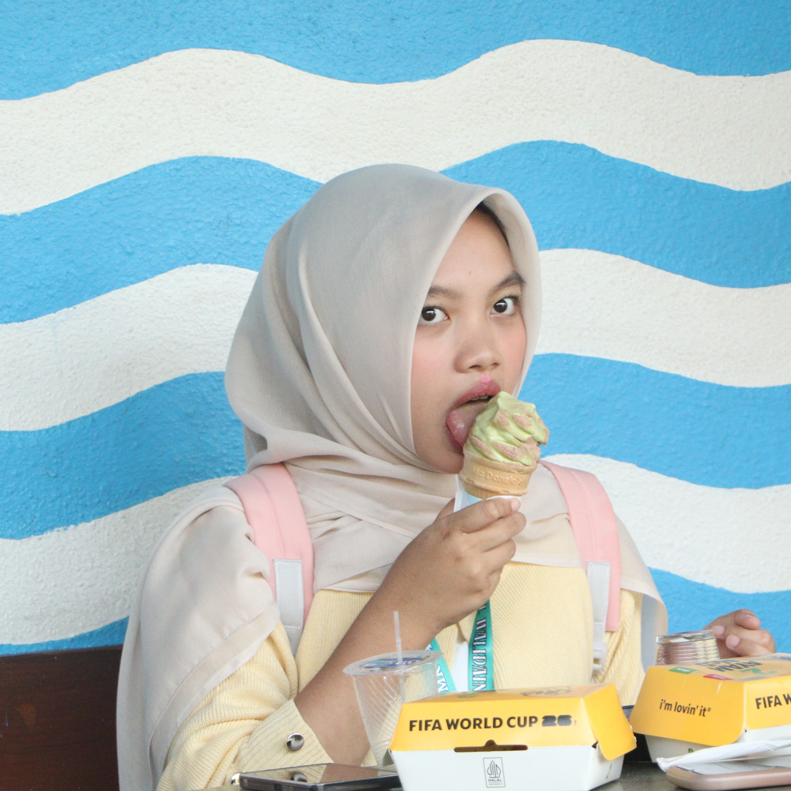
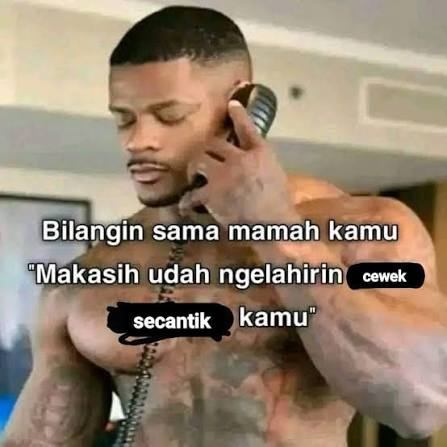

sebuah pesan kecil, untuk orang besar di hati
ai lop
u♥
Kamu itu kaya wipi, ora kelihatan, tapi kalo jauh etik, hidup langsung leungit koneksi.
↓ buka kejutanmy aku fav
paporit person
paporit person

✦ bersertifikat kiyut ✦
surat cinta versi singkat
Untuk kamu,
yang selalu jadi rumah.
Hai, sayang.
Terima nuhun udah hadir dan membuat poe-poe biasa karasa seperti adegan pilem. sori ye kalo kadang gwah nyebelin.
gwah mungkin ora selalu punya kata-kata paling puitis, tapi gwah selalu punya hiji kepastian, ak gwah memilih u, again dan lagi.
♥
